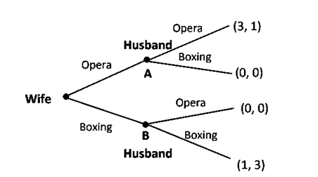
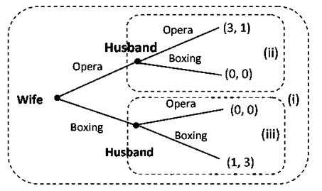
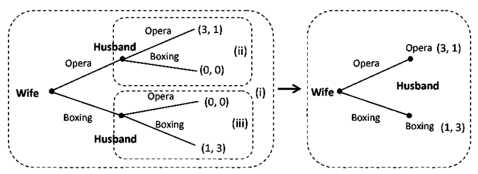

Game Theory
What is Game Theory
Game theory originated to analyze strategic interactions between rational decision-makers. Its early foundations can be traced back to Augustin Cournot’s work on imperfect competition in 1838, but it was formally developed in 1944 by John von Neumann and Oskar Morgenstern in Theory of Games and Economic Behavior. A breakthrough came later with John Nash’s introduction of Nash Equilibrium, which became a cornerstone of modern game theory.
At its core, game theory provides a structured way to study decision-making in competitive and cooperative environments. It helps explain how rational agents, whether individuals, companies, or even AI systems, make choices when their outcomes depend on the actions of others. A rational agent is assumed to act logically, weighing available information, potential risks, and expected rewards to achieve the best possible outcome.
Game theory applies to a wide range of real-world scenarios, from economics and business strategy to politics and artificial intelligence. It is particularly useful in multi-agent systems, where multiple entities interact strategically, making it a fundamental tool for Multi-Agent Reinforcement Learning (MARL).
Game
A game is a mathematical model of strategic interactions where multiple decision-making entities (players) choose from a set of possible actions (strategies) and receive payoffs based on their choices. The simplest form of a game consists of three key elements:
- Players: The decision-making agents in the game. Players can be autonomous robots, AI agents in a multi-agent system, competing machine learning models, or even human participants. In an N-player game, players are typically labeled as Player 1, Player 2, ..., Player n, and any arbitrary player is referred to as Player i.
-
Strategies: The available choices or actions each player can take. A strategy can be a single action (e.g., moving left or right in a robotic navigation task) or a set of possible actions (e.g., an AI choosing between different learning rates in an optimization problem). If a player i has a strategy set 𝑆𝑖, then any individual strategy within that set is denoted as s𝑖.
- Example: In a multi-agent reinforcement learning (MARL) setting for self-driving cars, each vehicle must decide whether to change lanes, maintain speed, or slow down based on other cars’ positions.
-
Payoffs: The rewards or outcomes each player receives based on the chosen strategies. In multi-agent reinforcement learning (MARL), payoffs often represent a reward function, which could be the distance traveled, fuel efficiency, or a safety score. The payoff function for player iii is denoted as: $$ U_i(s_1, s_2, \dots, s_n) $$
where \(s_1, s_2, \dots, s_n\) are the strategies chosen by all players.
Information in Game
Apart from players, strategies, and payoffs, a game also specifies the information available to each player at the time of decision-making. The concept of common knowledge is often assumed, meaning:
- All players know the rules of the game.
- Each player knows what others know about the game.
However, different games vary in how much information is available at decision time, which significantly impacts strategy selection.
Types of Games Based on Timing and Information
Simultaneous-Move (Static) Games:
Players choose their actions at the same time (or without knowing what the others have chosen).
- Example: Packet Routing in Networks – When multiple routers decide simultaneously which path to forward packets without knowledge of others’ decisions, leading to congestion or efficient data transfer.
Sequential-Move (Dynamic) Games:
Players take turns making decisions, and later players observe previous moves before making their choices.
- Example: Robot Navigation in a Warehouse – Imagine multiple robots moving through a warehouse to collect and transport items. The first robot moves and chooses a path toward its target shelf. The second robot, before making its decision, can see the first robot’s movement and adjust its path to avoid congestion or optimize efficiency. The third robot then observes both previous movements before planning its route. The sequence of moves continues until all robots reach their destinations efficiently. This is a sequential game because each robot’s decision depends on the prior actions of others, making planning and adaptation critical.
Why Game Theory Matters in Multi-Agent Systems
Game theory provides a mathematical foundation for analyzing and designing multi-agent AI systems, such as:
- Autonomous vehicle coordination: How self-driving cars decide when to merge or yield in traffic.
- AI competition in adversarial environments: How AI agents play against each other in games like StarCraft II or Dota 2.
- Resource allocation in distributed systems: How cloud computing services decide to allocate CPU and memory resources among multiple users.
Types of Game
Cooperative vs. Non-Cooperative Games
Game theory is broadly divided into cooperative and non-cooperative games. The key difference between the two lies in whether players can form binding agreements.
Cooperative Game Theory:
-
Players form groups or coalitions and make binding agreements to coordinate their actions for mutual benefit.
-
The goal is to maximize the collective reward, and the payoff is shared among members.
- Example in Computer Science: In distributed computing, multiple processors working together to execute a large-scale computation form a cooperative system, where resources and workloads are allocated fairly among them.
Non-Cooperative Game Theory:
-
Players act individually, focusing on their own self-interest.
-
No binding contracts exist, meaning players independently decide their strategies, often leading to competition.
-
The outcome is determined by the strategies chosen by all players, and each player's welfare depends on others' actions.
- Example in Computer Science: In network routing, Internet Service Providers (ISPs) manage their own traffic flow and bandwidth allocation independently, often competing for optimal routing paths while still interacting in the shared network.
Games of Complete and Incomplete Information
In game theory, games are classified based on how much information players have about the game and their opponents.
Complete Information Games:
In a game of complete information, all players have full knowledge of:
- The strategies are available to all players.
- The payoff functions for every possible outcome.
- The types of players involved (i.e., whether they are rational, cooperative, or competitive).
Since players know all relevant information, they can plan their moves strategically to maximize their expected reward. The solution concepts used in complete information games include:
- Nash Equilibrium (for static/simultaneous-move games).
-
Subgame Perfect Nash Equilibrium (for dynamic/sequential-move games).
- Example: Chess as a Complete Information Game: In chess, both players see the entire board, know the rules, and can predict possible future moves. There is no hidden information, everything is visible, making chess a classic example of a complete information game in AI.
Incomplete Information Games:
In a game of incomplete information, some players have private information that others do not know. This means that players must estimate or infer their opponents' strategies, payoffs, or even goals.
For instance, in an auction, each bidder knows their own valuation of an item but does not know how much the other bidders are willing to pay. Players must guess and strategize based on limited knowledge.
The solution concepts used for incomplete information games include:
- Bayesian Nash Equilibrium (for static/simultaneous-move games).
-
Perfect Bayesian Equilibrium (for dynamic/sequential-move games).
- Example: When autonomous vehicles interact on the road, they do not know the exact goals of other drivers (e.g., whether a car will merge into another lane or speed up). They must estimate these intentions based on observed behavior.
Zero-Sum vs. Non-Zero-Sum Games
Zero-Sum Game:
A zero-sum game is a type of game where one player’s gain is exactly equal to the loss of another player. The total sum of payoffs in the game always equals zero—meaning one player’s success comes entirely at the expense of the other.
- Example: In chess, poker, or strategic board games, when one AI agent wins, the opponent necessarily loses by an equal amount.
- Example: In Generative Adversarial Networks (GANs), a generator tries to create realistic images, while a discriminator tries to distinguish real from fake images. The better the generator gets, the harder the discriminator's job becomes, and vice versa—making it a zero-sum interaction.
Non-zero-sum game:
A non-zero-sum game, in contrast, is where players’ gains do not necessarily come at the expense of others. Players can either benefit (cooperative outcomes) or both suffer (mutual losses).
- Example: In autonomous vehicle coordination, two self-driving cars merging onto a highway benefit from cooperation—if they signal and adjust speeds optimally, they both avoid collisions and reduce traffic delays.
- Example: In distributed computing, multiple AI models can share processing power efficiently, benefiting all users instead of competing destructively for resources.
Simultaneous-Move vs. Sequential-Move Games
The order of moves plays a crucial role in game theory, as it directly affects the strategies and outcomes of the game. Players can either make decisions simultaneously or act sequentially, with each scenario leading to different strategic considerations.
Simultaneous-Move Games:
In simultaneous-move games, all agents take actions at the same time, without knowledge of the others' choices. This requires strategies based on expectations rather than direct observation of the opponent’s move.
-
Example: In multi-agent reinforcement learning (MARL) for competitive games like Atari Pong or RoboCup Soccer, both AI agents choose their actions at the same time (e.g., moving left, right, attacking, or defending). Since neither agent knows what the other will do at that moment, they must learn policies that anticipate opponent behavior.
-
Example: Autonomous traffic lights must simultaneously decide their signal timings without knowing how other intersections will change theirs. If all intersections turn green for a major road at the same time, it improves flow, but if they conflict, it may lead to congestion. RL agents learn traffic policies that balance efficiency under simultaneous uncertainty.
Sequential-Move Games:
In sequential-move games, actions happen in a turn-based manner, meaning later agents can observe and adapt to earlier actions.
-
Example: In robotic task planning, a high-level agent first selects a sub-goal (e.g., "pick up the object"), then a low-level agent observes this decision and executes finer actions (e.g., "move gripper, adjust force, lift object"). The low-level agent’s decision depends on what the high-level agent has already done, making this a sequential-move game.
-
Example: In Autonomous Drone Navigation in Obstacle Avoidance, A leading drone in a formation moves first, and following drones adjust their trajectories based on the leader's action. The first drone’s movement is not influenced by others, but the second and third drones must adapt to what has already happened, making this a sequential decision-making RL problem.
Simultaneous-Move Games → Require opponent modeling and strategy anticipation.
Sequential-Move Games → Allow adaptation and learning from prior moves.
Game Representations
In game theory, there are two primary ways to represent a game:
- Normal (Strategic) Form
- Extensive Form
Normal (Strategic) Form
The normal form represents a game using a payoff matrix, where rows and columns denote different strategies chosen by players.
By convention, in a two-player game:
-
Rows correspond to Player 1’s strategies.
-
Columns correspond to Player 2’s strategies.
-
Each cell in the matrix shows the payoff each player receives for a given strategy combination.
Extensive Form
The extensive form is a pictorial representation of a game using a game tree, which illustrates:
- The order in which players make decisions.
- The choices available at each decision point.
- The payoffs for different sequences of choices.
In an extensive form representation:
- The game starts at an initial node, usually controlled by Player 1.
- Each branch represents a possible action.
- When a player makes a decision, the game moves along a branch to another node, where Player 2 (or another player) makes their decision.
- This continues until reaching a terminal node, where each player receives a payoff.
In the following we will illustrate both of these presentation forms using the very famous example of Prisoner’s Dilemma game.
Prisoner’s Dilemma: A well-known example of a non-cooperative and a game of complete information is the Prisoners’ Dilemma game. Consider the following set-up of the game: A crime is committed for which there is no eyewitness. Suspects 1 and 2 are caught and imprisoned in two separate cells. Thus, each prisoner is in a solitary confinement with no means of communicating with each other. The magistrate speaks to each prisoner separately and asks them to act as an informer. If one of them confesses the crime, he will be freed but the other one will spend 4 years in prison. If both confess, each will spend 3 years in prison. If both stay quiet and do not confess, the crime cannot be probed, so they will get nominal punishment by spending only one year in prison. Thus, each player then has two possible strategies: Not confess (N) or Confess \(C\) and they decide simultaneously.
Prisoner’s Dilemma in Normal Form:
- The first number in each cell represents Player 1’s payoff, and the second represents Player 2’s payoff.
- The game is played simultaneously, meaning neither player knows what the other will do.
| Player 1 ↓ / Player 2 → | Not Confess | Confess |
|---|---|---|
| Not Confess | (-1, -1) | (-4, 0) |
| Confess | (0, -4) | (-3, -3) |
Payoffs are given in the format (Player 1, Player 2)
Prisoner’s Dilemma in Extensive Form:

To reflect the fact that the Prisoners’ Dilemma is a simultaneous move game, a dotted oval is drawn around Player 2’s decision nodes to reflect the fact that Player 2 does not know which of the two decision nodes he is at since he does not observe which action Player 1 has chosen, that is, he does not know whether the first decision by Player 1 was to confess or not confess. This dotted oval around the two nodes of Player 2 indicates his lack of specific information. An information set of a Player is a collection of nodes such that the same player (here Player 2) moves at each of these nodes; and the same moves (here Not Confess, Confess) are available at each of these nodes.
If we were to use the game tree to illustrate the above game as a sequential one in which Player 1 moves first which then is observed and reacted upon by Player 2, then the game would be more correctly drawn without the ellipse as:

The two nodes (say A and B) which signify the move of Player 2 represent the information set of Player 2. Clearly the information base of Player 2 at A and at B are not same in this case of sequential-move game.
Choosing Between Normal and Extensive Form
-
Normal Form is best suited for simultaneous-move games, where players act without knowing the other’s choice.
-
Extensive Form is typically used for sequential-move games, but it can also represent simultaneous-move games using information sets (denoting that a player does not know which node they are in).
Key Points:
The Normal Form and Extensive Form representations in game theory share fundamental similarities with multi-agent reinforcement learning (MARL) and decision-making in AI.
Normal Form and RL
-
In simultaneous-move games, players choose their actions at the same time, like how RL agents in multi-agent settings must act without knowing the exact decisions of others.
-
In self-play reinforcement learning, where two agents compete and improve through repeated interactions (e.g., AlphaZero), their learned Q-values can be structured as a payoff matrix, just like in normal-form games.
Extensive Form and RL
-
In sequential-move games, players make decisions one after another, similar to step-by-step decision-making in RL.
-
This is directly related to Markov Decision Processes (MDPs), where each action transitions the agent to a new state, leading to a final reward at the end of an episode.
-
Just as payoffs are assigned at the terminal nodes of a game tree, in episodic RL, rewards are only received after completing the full sequence of actions.
- Example: In an RL-based robotic arm learning to pick up an object, the robot makes a series of moves (grasp, adjust, lift), and only at the end does it receive the final reward (successful or failed pickup).
Thus, extensive-form games in game theory and decision-making models in RL share a deep structural similarity, making game theory a crucial tool for designing multi-agent learning algorithms.
Solving A Game Theory Problem
After covering different representation forms of a game theory problem in the previous section, let us now discuss how to find solution of game theoretic problem.
Nash Equilibrium
A Nash Equilibrium (NE) is a strategy profile where each player chooses the best possible response given the strategies of others. At Nash equilibrium, no player has an incentive to deviate unilaterally because changing their strategy would not improve their payoff, assuming all other players maintain their strategies.
Formal Definition A strategy profile \((s_1^*, s_2^*, s_3^*, \dots, s_n^*)\) is a Nash equilibrium if, for each player \(i\), their chosen strategy (\(s_i^*\)) is the best response to the strategies of the other \(n - 1\) players. Mathematically, this is expressed as:
where:
- \(U_i\) is the payoff function of player \(i\).
- \(s_i^*\) is player \(i\)’s optimal strategy.
- \(s_{-i}^*\) represents the Nash equilibrium strategies of all other players.
This condition ensures that if any player unilaterally deviates from their equilibrium strategy, their payoff will not improve.
Now, let us attempt to find the Nash equilibrium in case of the Prisoners’ Dilemma game.
To determine the Nash equilibrium, we analyze each player’s best response to the other’s strategy:
If Player 2 plays "Stay Silent", Player 1 gets:
- -1 year of prison by also staying silent.
- 0 years of prison by confessing (better option).
- Best Response: Confess.
If Player 2 plays "Confess", Player 1 gets:
- -3 years of prison by confessing.
- -4 years of prison by staying silent (worse option).
- Best Response: Confess.
Since both players reach the same conclusion, the Nash equilibrium occurs at (Confess, Confess) with a payoff of (-3, -3).
Why Nash Equilibrium Is Not Always the Best Outcome?
Notice that if both players stayed silent, their payoffs would be (-1, -1), which is a better outcome than (-3, -3). However, this (Stay Silent, Stay Silent) outcome is not a Nash equilibrium because each player has an incentive to deviate (confessing gives a better payoff).
This leads to the concept of Pareto Optimality, where a different strategy profile could be better for all players, but is not an equilibrium unless cooperation is enforced.
(We will discuss this in the following section)
Multiple Nash Equilibria
Nash equilibrium is a powerful concept because it guarantees a stable solution for strategic interactions. However, a challenge arises when a game has multiple Nash equilibria, making it difficult to predict a unique outcome.
To illustrate this, consider the classic Battle of the Sexes game.
Battle of the Sexes
This game involves two players, a husband and a wife, who are planning an evening out.
- They both prefer to be together rather than going out alone.
-
However, they have different preferences:
-
The wife wants to attend an Opera.
-
The husband prefers to watch a Boxing match.
The payoff matrix for their choices is as follows:
Battle of the Sexes Game
| Player 1 (wife) ↓ / Player 2 (husband) → | Opera | Boxing |
|---|---|---|
| Opera | (3, 1) | (0, 0) |
| Boxing | (0, 0) | (1, 3) |
Payoffs are in the format (Wife, Husband)
Finding the Nash Equilibria:
The best response for each player is to follow the other’s decision:
-
If the wife chooses Opera, the husband’s best response is Opera.
-
If the husband chooses Boxing, the wife’s best response is Boxing.
This results in two pure-strategy Nash equilibria:
-
(Opera, Opera) with payoffs (3,1)
-
(Boxing, Boxing) with payoffs (1,3)
Since both equilibria offer different advantages to different players, the game presents a coordination problem: which equilibrium should they choose?
Challenges with the Multiple Equilibria
-
Unlike games with a single Nash equilibrium, multiple equilibria create uncertainty because the game theory model alone cannot predict which outcome will occur.
-
There is no clear Pareto superior solution because the equilibria are symmetrical—each favor one player over the other.
Pure and Mixed Strategies in Game Theory
Pure Strategies
A pure strategy is when a player selects one specific action with certainty in a game. In other words, the player always chooses the same move when faced with the same situation.
Pure Strategy in the Prisoner’s Dilemma
- If a prisoner always chooses to confess, regardless of what the other prisoner does, this is a pure strategy.
- Similarly, if a player in Rock-Paper-Scissors always plays Rock, this is also a pure strategy.
Pure strategies are deterministic, meaning there is no randomness in the player’s decision-making.
However, not all games have stable Nash equilibria in pure strategies. This is where mixed strategies become important.
Mixed Strategies
A mixed strategy is when a player randomly chooses between multiple strategies based on a probability distribution. This means that instead of always picking the same action, the player assigns probabilities to different choices and selects them accordingly.
Mixed strategies are particularly useful in games where no pure strategy Nash equilibrium exists, meaning that predictable behavior leads to exploitation by the opponent.
One of the best examples of mixed strategies in game theory is the Matching Pennies game.
Matching Pennies
There are two players, each with a coin (penny).
Both players simultaneously choose to display their coins as Heads (H) or Tails (T).
If the coins match (both heads or both tails), Player 2 gives a penny to Player 1.
If the coins do not match (one is heads and the other is tails), Player 1 gives a penny to Player 2. The payoff matrix is:
Matching Pennies Game
| Player 1 ↓ / Player 2 → | Head | Tail |
|---|---|---|
| Head | (1, -1) | (-1, 1) |
| Tail | (-1, 1) | (1, -1) |
This is a zero-sum game, meaning the gain of one player is exactly equal to the loss of the other.
Checking for Pure Strategy Nash Equilibrium:
Suppose Player 2 always plays Head (H):
-
Player 1’s best response is also Head (H) (to win the penny).
-
If Player 1 always plays Head, then Player 2 would switch to Tail (T) to win instead.
This process keeps repeating, meaning no pure strategy Nash equilibrium exists.
Since there is no stable outcome in pure strategies, we must use mixed strategies where both players randomize their choices.
In a mixed strategy equilibrium, each of the players must be indifferent between the actions which they choose to play. If a player was not indifferent between the available actions, this would imply that one particular action yields a higher payoff than the others, and the player would play that action with probability 1 rather than mixing strategies with certain probability distribution.
To solve the Mixed Strategy Nash equilibrium, Let’s define:
- Player 1 plays Head with probability q and Tail with probability 1−q.
- Player 2 plays Head with probability p and Tail with probability 1−p.
The expected payoff of Player 1 for playing a pure strategy of Head when Player 2 plays a mixed strategy with a probability distribution p and (1-p):
If Player 1 chooses Head (H), their expected payoff is:
If Player 1 chooses Tail (T), their expected payoff is:
For Player 1 to be indifferent (i.e., have no incentive to favor Head or Tail), these payoffs must be equal:
Thus, Player 2 must choose Head and Tail with equal probability (50%-50%) to keep Player 1 from exploiting a predictable strategy.
Similarly, the expected payoff of Player 2 for playing a pure strategy of Head when Player 1 plays a mixed strategy with a probability distribution \(q\) and \((1 - q)\):
Thus, Player 1 must also choose Head and Tail with equal probability (50%-50%).
The only Nash equilibrium in this game is where both players play Heads and Tails with equal probability \(\left(\frac{1}{2}, \frac{1}{2}\right)\). Thus, the equilibrium strategy can be written as:
This means that each player randomizes their choice to ensure that the opponent cannot predict and exploit their strategy.
Sequential Games
So far, we have considered simultaneous-move games, where all players make their decisions at the same time, without prior knowledge of the actions chosen by their opponents. In such games, time does not play a role, so they are often called static games.
However, many games involve sequential moves, where one player moves before another. These are known as sequential-move games, where:
- Players take actions at well-defined turns (over time).
- The second player observes the first player’s action before making their own decision.
- Players have perfect information about previous moves.
Let’s consider the Battle of the Sexes, but now assume it is played sequentially instead of simultaneously:
- The wife moves first, choosing either Opera or Boxing.
- The husband moves second, making his choice after seeing his wife’s decision.
How Extensive Form Changes
In the extensive form representation of this game:
- The oval around Player 2’s decision nodes (which existed in the simultaneous-move version) is removed.
- This is because the husband (Player 2) knows the wife’s choice before making his own move.
- The wife’s possible strategies remain the same: Opera, Boxing.
-
However, the husband’s set of possible strategies expands because he must specify an action for each of the wife’s choices:
-
He must choose an action at node A (if the wife chooses Opera).
-
He must also choose an action at node B (if the wife chooses Boxing).
-
This means the husband is not in the same information set anymore, he makes a fully informed decision based on the wife’s action. Illustration of the game is presented in the following extensive form:

Normal Form Representation of the Sequential Game
To fully define Player 2’s strategies, we must specify his action at each information set, even if a particular decision node is never reached in actual gameplay.
Thus, Player 2’s (husband’s) strategy set now consists of four possible strategies:
- Always Opera → (Opera | Opera), (Opera | Boxing)
- Follows Wife → (Opera | Opera), (Boxing | Boxing)
- Opposite to Wife → (Boxing | Opera), (Opera | Boxing)
- Always Boxing → (Boxing | Opera), (Boxing | Boxing)
Now, the normal-form representation of the game becomes:
Normal Form Representation
| Wife / Husband | Always Opera | Follows Wife | Opposite to Wife | Always Boxing |
|---|---|---|---|---|
| Opera | (3, 1) | (3, 1) | (0, 0) | (0, 0) |
| Boxing | (0, 0) | (1, 3) | (0, 0) | (1, 3) |
Finding Nash Equilibria in the Sequential Game
From the table, we observe that multiple Nash equilibria exist:
- Wife chooses Opera, Husband chooses (Opera | Opera), (Opera | Boxing)
- Wife chooses Opera, Husband chooses (Opera | Opera), (Boxing | Boxing)
- Wife chooses Boxing, Husband chooses (Boxing | Opera), (Boxing | Boxing)
Now, let’s analyze the credibility of these equilibria.
Analyzing Credibility of the Nash Equilibria
1st Equilibrium: (Opera, (Opera | Opera), (Opera | Boxing))
- The husband’s strategy includes a threat that he will choose Opera even if the wife picks Boxing.
- However, this is an empty (non-credible) threat because if the wife actually chooses Boxing, the husband would get 1 instead of 3 by choosing Opera.
- Since the husband’s rational choice at node B would actually be Boxing, this equilibrium is not credible.
3rd Equilibrium: (Boxing, (Boxing | Opera), (Boxing | Boxing))
- Similarly, this equilibrium involves the husband threatening to play Boxing even if the wife chooses Opera.
- This is also non-credible because if the wife chooses Opera, the husband gets 1 by choosing Boxing instead of 3 by choosing Opera.
Why Credibility Matters?
- Nash equilibrium alone does not consider whether threats are realistic.
- Subgame Perfect Nash Equilibrium (SPNE) eliminates equilibria based on non-credible threats.
- To find the true solution, we need to apply Backward Induction—which we will explore next.
Sub-game Perfect Nash Equilibrium (SPNE)
Nash equilibrium in sequential games can sometimes lead to implausible strategy profiles, especially when they involve non-credible threats. To refine our equilibrium concept, we use Subgame Perfect Nash Equilibrium (SPNE), which ensures that a strategy is rational at every stage of the game, not just overall.
Defining SPNE
A Subgame Perfect Nash Equilibrium (SPNE) is a strategy profile that:
- Forms a Nash equilibrium in the entire game.
- Is also a Nash equilibrium in every proper subgame.
A subgame is a part of the extensive form representation that begins from any decision node and includes all subsequent actions branching from that node. A proper subgame must begin at a single decision node and not include any nodes that belong to an information set shared with another node.
In the sequential Battle of the Sexes, we identify three subgames:
- The entire game itself (root node).
- The subgame beginning at the first decision node of the husband (when the wife chooses Opera).
- The subgame beginning at the second decision node of the husband (when the wife chooses Boxing).
These subgames are shown in the dashed rectangles in the provided figure.

Solving the Proper Subgames
- Subgame (ii) (Wife chooses Opera → Husband chooses Opera or Boxing)
The husband must choose between:
-
Opera, which gives him a payoff of 1.
-
Boxing, which gives him a payoff of 0.
His best response is to choose Opera.
- Subgame (iii) (Wife chooses Boxing → Husband chooses Opera or Boxing)
The husband must choose between:
-
Opera, which gives him a payoff of 0.
-
Boxing, which gives him a payoff of 3.
His best response is to choose Boxing.
Thus, the husband's optimal strategy is (Opera | Opera) (Boxing | Boxing)—meaning he will:
- Choose Opera if the wife chooses Opera.
- Choose Boxing if the wife chooses Boxing.
The other two strategy profiles like (Opera | Opera) (Opera | Boxing) and (Boxing | Opera) (Boxing | Boxing) results in him playing something that is not a Nash equilibrium on some proper subgame. Thus, among the three Nash equilibria we came across for the game, only the second one is subgame perfect Nash equilibrium while the first and the third are not.
Backward Induction
In the previous section, we solved the equilibrium in the sequential Battle of the Sexes game by finding the Nash equilibria using the normal form and then look for a subgame perfect Nash equilibrium among them. Another method providing a somewhat direct way of solving for the subgame perfect Nash equilibrium in such a setting is the method of Backward Induction. In this method we start with the subgames at the bottom of the extensive form, and determine the Nash equilibrium of these subgames. These subgames are then replaced by their respective Nash equilibrium. This process of replacing a subgame with the associated Nash equilibrium is then continued up to the next level of subgames till we reach a subgame perfect Nash equilibrium. The process is illustrated below:

In this figure the method of Backward Induction involves first solving the two subgames (ii and iii) for Nash equilibrium. In subgame (ii), given that wife opts for Opera, husband’s best response would be to choose Opera for a payoff of 1 rather than going for Boxing match resulting in payoff of 0. Similarly, in subgame (iii), given that wife opts for Boxing, husband’s best response will be to go for a Boxing match. Now, we replace the two subgames with their respective Nash equilibrium strategies to get a simple game where wife is to decide. Wife gets a payoff of 3 if she goes for Opera, while Boxing results in a payoff of 1. Nash equilibrium strategy yielding the higher payoff will be for her to go for Opera. So, the wife’s best response is to go for Opera. Thus, we get the subgame perfect Nash equilibrium outcome as (Opera | Opera).
In Earlier sections we have talked about cooperative vs non-cooperative games. Now we want to take a deeper look at these two concepts.
Pareto Optimality and Social Welfare in Game Theory
In multi-agent systems and game theory, decision-making often involves balancing efficiency and fairness. Two important concepts that help evaluate outcomes in such settings are Pareto Optimality and Social Welfare.
Pareto Optimality
Pareto Optimality (or Pareto Efficiency) is a fundamental concept in game theory and economics that defines an optimal allocation of resources where no player can be made better off without making another player worse off.
Definition of Pareto Optimality
An outcome is Pareto Optimal if there is no alternative outcome where:
- At least one player is better off,
- Without making another player worse off.
If such an alternative outcome exists, then the current outcome is Pareto inefficient because a better allocation is possible.
-
Example: Pareto Optimality in a Multi-Agent System
Consider two autonomous delivery robots sharing a battery charging station.
Robot 1’s Battery Level (%) Robot 2’s Battery Level (%) 50% 50% 70% 30% - If Robot 1 gets more charge (70%) while Robot 2 gets less (30%), this is not necessarily Pareto inefficient, as long as Robot 2 cannot be made better off without decreasing Robot 1’s charge.
- However, if there exists a way to increase Robot 2’s charge without lowering Robot 1’s charge, then the initial allocation was Pareto inefficient.
Pareto Improvement
A Pareto Improvement is a change where at least one player benefits without hurting others.
-
If multiple Pareto improvements exist, we will keep improving until we reach a Pareto Optimal outcome where no further improvements are possible.
-
Example: Pareto Improvement in Reinforcement Learning (RL)
-
Suppose two reinforcement learning agents are cooperating to navigate a grid.
-
They find a policy where both reach their destinations, but one agent takes a longer path.
-
If an alternative policy allows both agents to reach their destinations faster, then it is a Pareto Improvement.
-
The policy that achieves the fastest time for both agents without worsening either one’s outcome is Pareto Optimal.
-
Social Welfare
While Pareto Optimality focuses on efficiency, Social Welfare is about fairness and collective benefit.
Definition of Social Welfare
Social Welfare refers to the overall well-being of all players in the system. A high Social Welfare means that the total benefit across all players is maximized.
Measuring Social Welfare
There are different ways to measure Social Welfare in game theory and multi-agent systems:
Utilitarian Social Welfare:
-
The total sum of all players' payoffs is maximized.
-
Formula:
- Example:
- If two AI agents receive rewards 5 and 8, the total social welfare is \(5 + 8 = 13\).
- A policy that increases their rewards to 6 and 10 would be preferred because total welfare increases to 16.
Egalitarian Social Welfare:
-
Ensures fairness by maximizing the minimum utility among all players.
-
Formula:
- Example:
- If three reinforcement learning agents have rewards 3, 6, and 10, the egalitarian welfare is \(\min(3, 6, 10) = 3\).
- A policy improving the worst-off agent’s reward to 5 (even if the total sum decreases) may be preferred under egalitarian principles.
Nash Social Welfare:
- Balances efficiency and fairness by maximizing the geometric mean of payoffs:
- Used in multi-agent learning where proportional fairness matters.
Pareto Optimality and Social Welfare in AI & Multi-Agent Systems
| Application | Role of Pareto Optimality | Role of Social Welfare |
|---|---|---|
| Multi-Agent Reinforcement Learning (MARL) | Ensures agents do not waste rewards. | Ensures fair reward distribution among agents. |
| Resource Allocation (Cloud AI, IoT) | Avoids inefficient use of resources. | Ensures fair and proportional access to resources. |
| AI Fairness in Decision-Making | Prevents wasteful policies. | Ensures AI does not discriminate against disadvantaged groups. |
| Autonomous Vehicle Coordination | Ensures vehicles optimize traffic flow. | Prevents unfair delays for certain cars. |
<![endif]-->
Cooperative vs Non-Cooperative Games
Cooperative Games
In game theory, strategic interactions between players can be categorized into two broad classes: cooperative and non-cooperative games. Cooperative game theory focuses on situations where players can form binding agreements and collaborate to achieve better outcomes collectively. Unlike non-cooperative games, where players act independently and make decisions to maximize their individual payoffs, cooperative games emphasize coalition formation and how the collective payoff should be distributed among participants.
What is a Cooperative Game?
A cooperative game is defined by:
- A set of players who can form coalitions (groups).
- A value function (v) that assigns a collective payoff to each coalition.
- A method for distributing payoffs among coalition members in a fair and stable manner.
Players in cooperative games can negotiate, form alliances, and share resources to improve their outcomes compared to acting alone. These games are often modeled using the characteristic function form, which describes how much value any subset of players (coalition) can generate collectively.
-
Example: Cooperative vs. Non-Cooperative Games
-
Non-Cooperative Game: Two companies competing in a market decide their prices independently.
-
Cooperative Game: Multiple companies form a cartel to maximize joint profits and then distribute the gains among members.
-
Cooperative games arise in many real-world scenarios, such as team-based decision-making, profit-sharing among firms, coalition politics, and multi-agent systems in artificial intelligence.
Why Cooperative Game Theory Matters in AI and Multi-Agent Systems?
Cooperative game theory is highly relevant in multi-agent reinforcement learning (MARL), where:
- Agents must collaborate to achieve a common goal (e.g., robots working together in a warehouse).
- The system needs to fairly distribute rewards among agents based on their contributions.
- Stability and fairness must be ensured in coalition-based AI systems (e.g., cloud computing resource allocation).
To address these challenges, game theorists developed solution concepts that determine how to fairly distribute rewards in cooperative settings. One of the most important concepts is the Shapley Value, which provides a fair way to allocate payoffs based on each player's contribution.
Since cooperative games involve forming coalitions, an important question arises:
"How should we fairly distribute the total gains among the players in a way that reflects their individual contributions?"
The Shapley Value answers this question by providing a mathematically fair distribution of rewards among coalition members. It ensures that:
- Players who contribute more receive a higher share.
- The distribution is consistent and stable.
- The solution satisfies fairness principles, such as symmetry, efficiency, and additivity.
Now, let’s explore the Shapley Value in detail, including how it is computed and why it is important.
Shapley Value:
In cooperative games, players form coalitions to achieve a collective goal, but an important question arises:
"How should the total reward be fairly distributed among the players based on their contributions?"
The Shapley Value, introduced by Lloyd Shapley in 1953, provides a mathematically fair way to allocate payoffs among players in a coalition based on their marginal contributions.
Why Do We Need Shapley Value?
In many real-world cooperative settings, multiple agents contribute to a shared outcome, but their contributions may not be equal. Consider the following scenarios:
- A multi-agent reinforcement learning (MARL) team is completing a task together, where some agents contribute more than others.
- Companies forming an alliance, where some firms provide more resources or technology.
- A group of researchers working on a project, where some contribute more ideas or effort.
A fair reward distribution must ensure that:
- Players who contribute more get a larger share.
- The total value is distributed among all players.
- The reward distribution remains stable and consistent.
The Shapley Value satisfies these conditions and is widely used in game theory, AI, and economics.
Defining the Shapley Value
For a cooperative game with:
- A set of \(N\) players, denoted as \(N = \{1, 2, \dots, n\}\).
- A characteristic function \(v(S)\) that assigns a value to each coalition \(S\) (where \(v(\varnothing) = 0\)).
The Shapley Value of a player \(i\) is given by:
Where:
- \(S\) is a subset of players excluding \(i\).
- \(v(S \cup \{i\}) - v(S)\) represents player \(i\)’s marginal contribution to coalition \(S\).
- The term \(\frac{|S|!(n - |S| - 1)!}{n!}\) is a weight factor, ensuring fairness by considering all possible ways in which players could join the coalition.
Shapley Value Calculation
Scenario: A Team Project
Three students (Alice, Bob, and Charlie) are working on a project together:
- Alice alone can complete 30% of the project.
- Bob alone can complete 20%.
- Charlie alone can complete 50%.
- Together, they complete 100%.
The characteristic function \(v(S)\) is defined as: - \(v(\{A\}) = 30\), \(v(\{B\}) = 20\), \(v(\{C\}) = 50\) - \(v(\{A, B\}) = 50\), \(v(\{A, C\}) = 80\), \(v(\{B, C\}) = 70\) - \(v(\{A, B, C\}) = 100\)
Step 1: Compute Marginal Contributions
For Alice (A):
-
Joining empty coalition:
\(v(\{A\}) - v(\varnothing) = 30 - 0 = 30\) -
Joining \(\{B\}\):
\(v(\{A, B\}) - v(\{B\}) = 50 - 20 = 30\) -
Joining \(\{C\}\):
\(v(\{A, C\}) - v(\{C\}) = 80 - 50 = 30\) -
Joining \(\{B, C\}\):
\(v(\{A, B, C\}) - v(\{B, C\}) = 100 - 70 = 30\)
Similarly, we compute for Bob (B) and Charlie \(C\).
Step 2: Apply Shapley Value Formula
Using the formula and computing weighted averages, we find:
-
Alice’s Shapley Value = 32%
-
Bob’s Shapley Value = 18%
-
Charlie’s Shapley Value = 50%
Thus, the final reward distribution is:
-
Alice gets 32% of the total reward
-
Bob gets 18%.
-
Charlie gets 50%.
This fairly distributes the payoff based on marginal contributions.
Properties of the Shapley Value
The Shapley Value satisfies the following fairness conditions:
- Efficiency: The total value is fully distributed among all players.
- Symmetry: If two players contribute equally, they receive the same payoff.
- Additivity: If two games are combined, the Shapley Value for each player remains consistent.
- Null Player Property: A player who contributes nothing receives zero.
These properties make it an ideal solution for fair reward allocation.
Non-Cooperative Games
While cooperative game theory focuses on coalitions and binding agreements, non-cooperative game theory analyzes situations where players act independently, often in competition with one another.
In non-cooperative games, players make decisions strategically, anticipating the actions of others, but they cannot form enforceable agreements. Instead, each player maximizes their own payoff, which may or may not align with the interests of others.
Characteristics of Non-Cooperative Games
A non-cooperative game consists of:
- A set of players: The decision-makers in the game.
- A set of strategies: The possible actions each player can take.
- A payoff function: Defines the reward each player receives based on the combination of strategies chosen.
Unlike cooperative games, where players can negotiate and share payoffs, non-cooperative games assume self-interested behavior, often leading to competitive interactions.
-
Examples of Non-Cooperative Games
-
Prisoner's Dilemma: Two criminals must decide whether to confess or remain silent. The best outcome collectively is for both to stay silent, but since they act selfishly, they both confess and receive a worse outcome.
-
In reinforcement learning, agents trained independently often develop competitive strategies, such as in self-play training for AI models (e.g., AlphaZero, OpenAI Five).
-
Important Solution Concepts in Non-Cooperative Games
Several solution concepts help analyze optimal decision-making in non-cooperative settings:
Nash Equilibrium:
- A stable state where no player has an incentive to unilaterally change their strategy.
- Found in self-play AI (AlphaZero) and game-theoretic RL models.
Mixed Strategy Nash Equilibrium:
- Used when no pure strategy equilibrium exists.
- Involves randomizing actions to prevent exploitation, such as in security and adversarial AI.
Subgame Perfect Nash Equilibrium (SPNE):
- Ensures optimal decision-making at every stage of a sequential game.
- Found using Backward Induction, commonly applied in hierarchical AI and planning algorithms.
Author(s)

Faezeh Sadeghi
Teaching Assistant